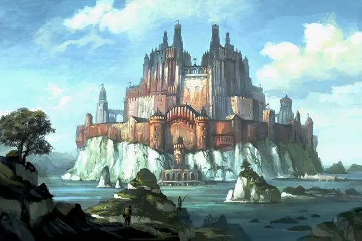

Die Akademie Elarion
Die Akademie Elarion, gelegen im Jenseits von Eosphoros, ist eine renommierte Schule für wissbegierige Geister. Seit 600 Jahren thront sie an diesem Ort und gilt als die erste Schule der gesamten Insel. Die Akademie wird seit ihrer Gründung von Rektor Vrunaxx Agoras geleitet und ist der einzige Ort im Jenseits, an dem man Bildung und Weiterentwicklung erfahren kann. Die Schule ist in vier spezialisierte Häuser unterteilt. Die Akademie gehört zu den wenigen Orten, die nicht vollständig unter der Kontrolle der Kirche stehen, und dient als zentrale Institution, welche Jugendliche auf ihrem Weg ins Berufsleben begleitet.
Wappen von Elarion
Das Banner von Elarion zeigt einen goldenen Drachen, umgeben von einem Lorbeerkranz und flankiert von zwei Speeren. Dieses stolze Emblem symbolisiert Macht und Ruhm.
Häuser
Haus Magicae: Dieses Haus widmet sich ausschließlich der Magie in all ihren Formen – von der Transmutation bis zur Evokation (mit Ausnahme der Nekromantie). Verschiedene Lehrer unterrichten hier und bereiten die Schüler auf eine vielversprechende Karriere in der Magie und Forschung vor. Haus Magicae wird von Ebahn Etosh geleitet.
Haus Militia: In diesem Haus erhalten die Schüler eine umfassende militärische Ausbildung. Der Unterricht umfasst Schwertkampf, Taktik, Logik, Infiltration und Spionage. Haus Militia wird von Xedor, dem Rücksichtslosen, geführt. Absolventen werden häufig von der Kirche in die Armee berufen oder zu Blutjägern ausgebildet.
Haus Fidem: Dieses Haus bildet die Kleriker der Kirche der Ordnung aus und untersteht eher der Kontrolle der Kirche als der des Rektors. Absolventen werden von der Kirche der Ordnung zu Priestern oder Tempelwächtern berufen. Haus Fidem wird vom Kardinal, der für Flexibilität und Anpassungsfähigkeit steht, geleitet.
Haus Education: In diesem Haus erhalten die Schüler eine fundierte Grundausbildung. Sie lernen Sprachen, Mathematik, Geschichte und weitere grundlegende Fächer. Nach Bestehen der Prüfung im Haus Education werden die Schüler einem der weiterführenden Häuser zugewiesen – wobei sowohl der Hausleiter als auch der Schüler der Zuweisung zustimmen müssen. Leiter dieses Hauses ist Dhabin Teprix.
Schulischer Ablauf
Die Aufnahme in die Akademie erfolgt über einen Prüfungstest, der schriftliche, körperliche und soziale Aspekte abdeckt. Anschließend durchlaufen die Schüler zunächst das Haus Education, in dem ihnen grundlegende Kenntnisse vermittelt werden. Danach können sie sich für verschiedene Klassen einschreiben und alle drei Monate an magischen Turnieren teilnehmen, die darüber entscheiden, in welches weiterführende Haus sie aufgenommen werden. Die endgültige Zuweisung setzt die Zustimmung beider Seiten – des Hausleiters und des Schülers – voraus.
Nach der Zuweisung werden die Schüler direkt vom jeweiligen Hausleiter unterrichtet und legen eine finale, individuell angepasste Prüfung ab, die den erfolgreichen Abschluss ihrer schulischen Laufbahn bestimmt.
Weitere wichtige Orte
Der Große Saal: Hier versammeln sich alle Schüler zum Essen, das morgens, mittags und abends serviert wird. Auch das Lehrpersonal nimmt hier seine Mahlzeiten ein.
Die Bibliothek: Eine riesige Bibliothek, die sich über das gesamte Schulgelände erstreckt und in die verschiedenen Häuser unterteilt ist. Sie steht theoretisch allen Schülern offen, wird jedoch oft in einen theoretischen Wettkampf zwischen den Häusern umgewandelt.
Der Prüfungsraum: Ein magischer Raum, in dem sämtliche Prüfungen stattfinden. Er ist stets perfekt vorbereitet und außerhalb der Prüfungstage schwer zu finden.
Räumlichkeiten und Schlafsäle der Häuser: Jedes Haus verfügt über Schlafsäle und weitere Räumlichkeiten, die optimal auf die Bedürfnisse der Schüler abgestimmt sind.
Gebiet rund um die Schule
Die Schule befindet sich inmitten eines Sees und ist ausschließlich mit dem Boot erreichbar. Der See liegt auf einer freien, leicht erhöhten Ebene des Jenseits. Rund um den See befinden sich einige Dörfer und Städte, die von der Akademie vor düsteren Bedrohungen geschützt werden.